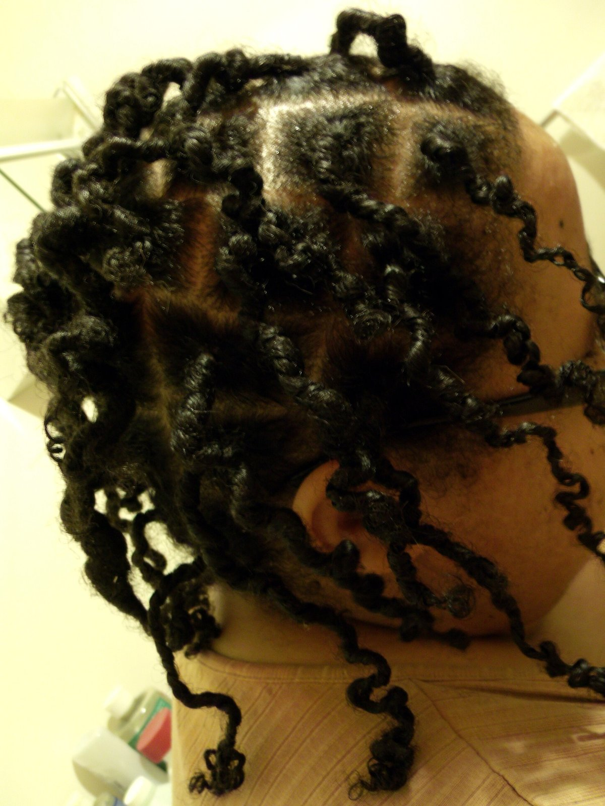
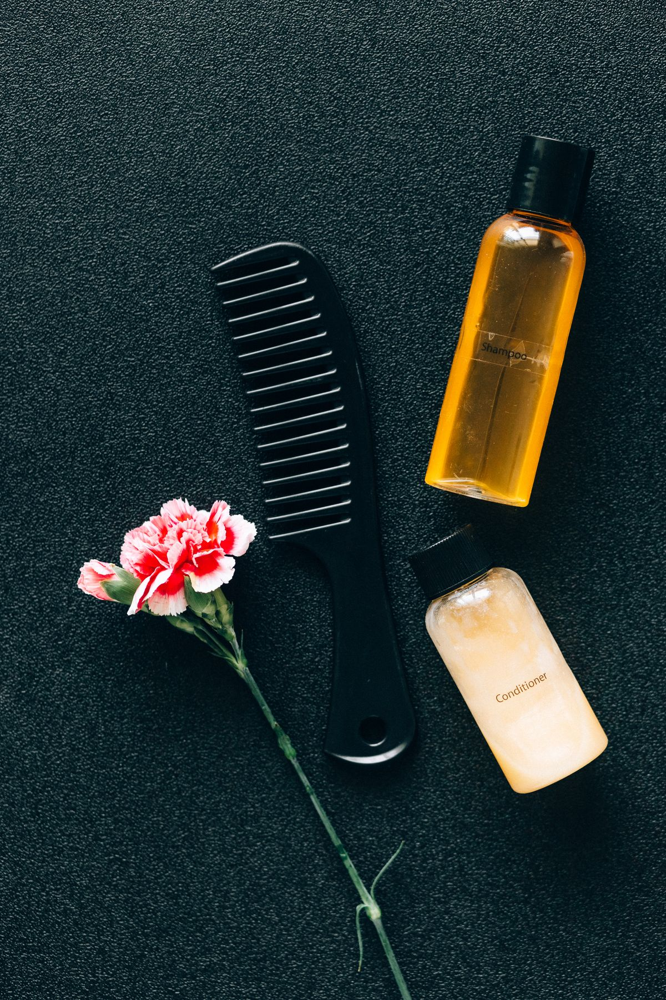
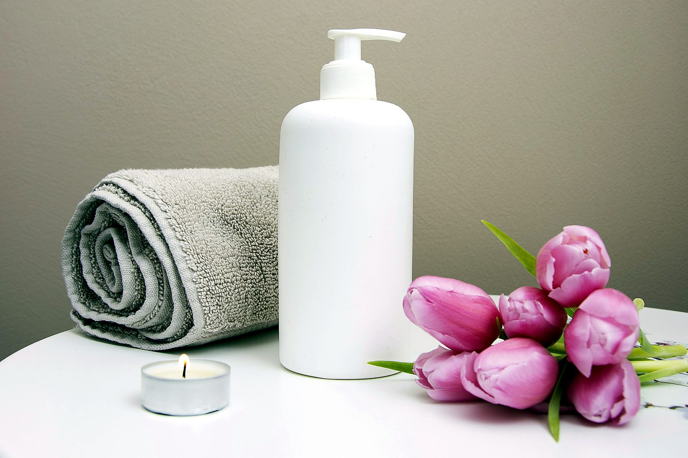
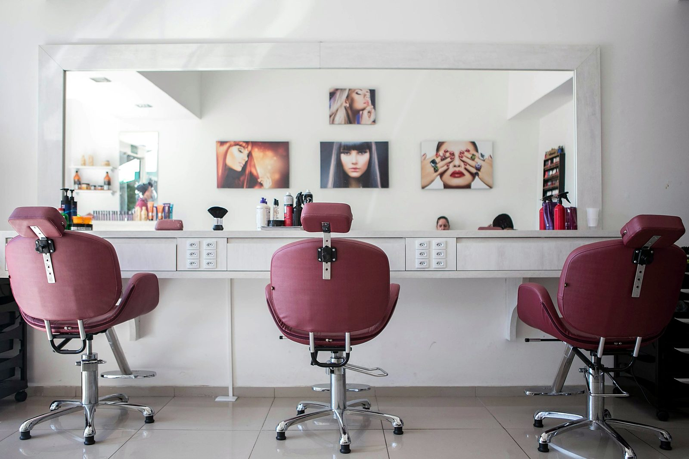

The KuuStore blog
Plain answers about nails, brows and the people who care for them, written for South Florida first and useful anywhere.
How to Prep Hair for Braids: 5 Steps, 1 DIY Check to Stop the Itch for You in 2026
Your braid day is set. You have the style saved on your phone. November 21, 2026.
1 Set, 3 Years, $25 Holds Your Chair: How Long Your Ombre Brows Last, and What Fades Them
You are thinking about ombre brows, and one question sits at the top of your mind: how long will they last? November 19, 2026.
1 Rule, 4 to 6 Weeks, $25 Holds Your Chair: How Often You Retwist Locs, and When to Wait
Your roots are puffy. Your friend says retwist every two weeks. November 19, 2026.

3 Sizes, 6 Hours, $25 Down: How Long Your Knotless Braids Take, Start to End
You booked the chair. Now you are doing the math in your head: can I still pick up my child at 4? November 19, 2026.

10 Days, 3 Signs, 1 Check for Your Ombre Brows
You walk out of your brow appointment in Miramar at 2 in the afternoon, catch your face in the car mirror in the bright South Florida sun, and your heart drops a bit. November 18, 2026.

5 Stages, 3 Signs, 1 Check: Your Starter Locs Lock Right
You got your starter locs put in 3 weeks ago at a shop here in Miramar. November 18, 2026.

Stop, 4 Steps to Take Down Braids Without Losing Hair: 3 Signs, 1 Check for Your Takedown
It is a Sunday night in Miramar. November 18, 2026.
Knotless, box braids or cornrows: how to pick your next set
Install time, tension on your edges, upkeep, and how long each style really lasts. November 14, 2026.

Your first fungal toenail care visit: what actually happens
The look, the cleaning, the shaping and the aftercare plan, step by step, with prices. November 14, 2026.

Silk press aftercare: keeping it smooth for about two weeks
The nightly wrap, the shower-cap rule, and the heat budget that stops touch-ups from becoming damage. November 14, 2026.

Swim-season hair: braids, locs, and wigs in pool and ocean water
Soak it clean first, rinse it right after, dry it to the roots, and the honest rule for glued wigs. November 14, 2026.

Tender-headed kids: gentle braid prep that stops the tears
Wet hair, conditioner slip, fingers first, and a hand at the roots so the pull never reaches her scalp. November 14, 2026.

At-home pedicure safety: safe at home, and when nails need a pro
Soak, trim straight across, push, never cut, the cuticle, and the clear list of signs that mean a professional. November 14, 2026.

Lace-front wig install: 5 mistakes that give it away
Wet glue, a dirty hairline, one big lace cut, and the plain fixes for each. November 14, 2026.

Braids and locs between appointments
Satin at night, a scalp wash every 1 to 2 weeks, and the hard 8-week limit on braids. November 14, 2026.

Ombre brows: how long they really last
1 to 3 years, and the two weeks of aftercare that decide where yours land. November 14, 2026.

Why Miami’s humidity is hard on toenails
Heat, sweat, closed shoes and what actually helps.


